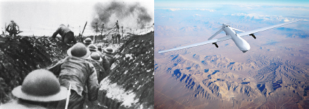
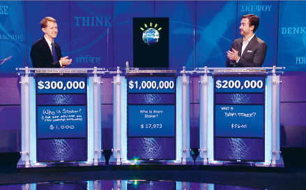
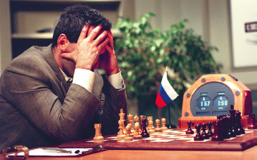

The preceding pages took us on a brief tour of recent scientific discoveries that undermine the liberal philosophy. It’s time to examine the practical implications of these scientific discoveries. Liberals uphold free markets and democratic elections because they believe that every human is a uniquely valuable individual, whose free choices are the ultimate source of authority. In the twenty-first century three practical developments might make this belief obsolete:
1. Humans will lose their economic and military usefulness, hence the economic and political system will stop attaching much value to them.
2. The system will still find value in humans collectively, but not in unique individuals.
3. The system will still find value in some unique individuals, but these will be a new elite of upgraded superhumans rather than the mass of the population.
Let’s examine all three threats in detail. The first – that technological developments will make humans economically and militarily useless – will not prove that liberalism is wrong on a philosophical level, but in practice it is hard to see how democracy, free markets and other liberal institutions can survive such a blow. After all, liberalism did not become the dominant ideology simply because its philosophical arguments were the most accurate. Rather, liberalism succeeded because there was much political, economic and military sense in ascribing value to every human being. On the mass battlefields of modern industrial wars, and in the mass production lines of modern industrial economies, every human counted. There was value to every pair of hands that could hold a rifle or pull a lever.
In 1793 the royal houses of Europe sent their armies to strangle the French Revolution in its cradle. The firebrands in Paris reacted by proclaiming the levée en masse and unleashing the first total war. On 23 August, the National Convention decreed that ‘From this moment until such time as its enemies shall have been driven from the soil of the Republic, all Frenchmen are in permanent requisition for the services of the armies. The young men shall fight; the married men shall forge arms and transport provisions; the women shall make tents and clothes and shall serve in the hospitals; the children shall turn old lint into linen; and the old men shall betake themselves to the public squares in order to arouse the courage of the warriors and preach hatred of kings and the unity of the Republic.’1
This decree sheds interesting light on the French Revolution’s most famous document – The Declaration of the Rights of Man and of the Citizen – which recognised that all citizens have equal value and equal political rights. Is it a coincidence that universal rights were proclaimed at the same historical juncture that universal conscription was decreed? Though scholars may quibble about the exact relations between the two, in the following two centuries a common argument in defence of democracy explained that giving people political rights is good, because the soldiers and workers of democratic countries perform better than those of dictatorships. Allegedly, granting people political rights increases their motivation and their initiative, which is useful both on the battlefield and in the factory.
Thus Charles W. Eliot, president of Harvard from 1869 to 1909, wrote on 5 August 1917 in the New York Times that ‘democratic armies fight better than armies aristocratically organised and autocratically governed’ and that ‘the armies of nations in which the mass of the people determine legislation, elect their public servants, and settle questions of peace and war, fight better than the armies of an autocrat who rules by right of birth and by commission from the Almighty’.2
A similar rationale stood behind the enfranchisement of women in the wake of the First World War. Realising the vital role of women in total industrial wars, countries saw the need to give them political rights in peacetime. Thus in 1918 President Woodrow Wilson became a supporter of women’s suffrage, explaining to the US Senate that the First World War ‘could not have been fought, either by the other nations engaged or by America, if it had not been for the services of women – services rendered in every sphere – not only in the fields of effort in which we have been accustomed to see them work, but wherever men have worked and upon the very skirts and edges of the battle itself. We shall not only be distrusted but shall deserve to be distrusted if we do not enfranchise them with the fullest possible enfranchisement.’3
However, in the twenty-first century the majority of both men and women might lose their military and economic value. Gone is the mass conscription of the two world wars. The most advanced armies of the twenty-first century rely far more on cutting-edge technology. Instead of limitless cannon fodder, you now need only small numbers of highly trained soldiers, even smaller numbers of special forces super-warriors and a handful of experts who know how to produce and use sophisticated technology. Hi-tech forces ‘manned’ by pilotless drones and cyber-worms are replacing the mass armies of the twentieth century, and generals delegate more and more critical decisions to algorithms.
Aside from their unpredictability and their susceptibility to fear, hunger and fatigue, flesh-and-blood soldiers think and move on an increasingly irrelevant timescale. From the days of Nebuchadnezzar to those of Saddam Hussein, despite myriad technological improvements, war was waged on an organic timetable. Discussions lasted for hours, battles took days, and wars dragged on for years. Cyber-wars, however, may last just a few minutes. When a lieutenant on shift at cyber-command notices something odd is going on, she picks up the phone to call her superior, who immediately alerts the White House. Alas, by the time the president reaches for the red handset, the war has already been lost. Within seconds, a sufficiently sophisticated cyber strike might shut down the US power grid, wreck US flight control centres, cause numerous industrial accidents in nuclear plants and chemical installations, disrupt the police, army and intelligence communication networks – and wipe out financial records so that trillions of dollars simply vanish without trace and nobody knows who owns what. The only thing curbing public hysteria is that with the Internet, television and radio down, people will not be aware of the full magnitude of the disaster.
On a smaller scale, suppose two drones fight each other in the air. One drone cannot fire a shot without first receiving the go-ahead from a human operator in some bunker. The other drone is fully autonomous. Which do you think will prevail? If in 2093 the decrepit European Union sends its drones and cyborgs to snuff out a new French Revolution, the Paris Commune might press into service every available hacker, computer and smartphone, but it will have little use for most humans, except perhaps as human shields. It is telling that already today in many asymmetrical conflicts the majority of citizens are reduced to serving as human shields for advanced armaments.

Left: Soldiers in action at the Battle of the Somme, 1916. Right: A pilotless drone.
Left: © Fototeca Gilardi/Getty Images. Right: © alxpin/Getty Images.
Even if you care more about justice than victory, you should probably opt to replace your soldiers and pilots with autonomous robots and drones. Human soldiers murder, rape and pillage, and even when they try to behave themselves, they all too often kill civilians by mistake. Computers programmed with ethical algorithms could far more easily conform to the latest rulings of the international criminal court.
In the economic sphere too, the ability to hold a hammer or press a button is becoming less valuable than before. In the past, there were many things only humans could do. But now robots and computers are catching up, and may soon outperform humans in most tasks. True, computers function very differently from humans, and it seems unlikely that computers will become humanlike any time soon. In particular, it doesn’t seem that computers are about to gain consciousness, and to start experiencing emotions and sensations. Over the last decades there has been an immense advance in computer intelligence, but there has been exactly zero advance in computer consciousness. As far as we know, computers in 2016 are no more conscious than their prototypes in the 1950s. However, we are on the brink of a momentous revolution. Humans are in danger of losing their value, because intelligence is decoupling from consciousness.
Until today, high intelligence always went hand in hand with a developed consciousness. Only conscious beings could perform tasks that required a lot of intelligence, such as playing chess, driving cars, diagnosing diseases or identifying terrorists. However, we are now developing new types of non-conscious intelligence that can perform such tasks far better than humans. For all these tasks are based on pattern recognition, and non-conscious algorithms may soon excel human consciousness in recognising patterns. This raises a novel question: which of the two is really important, intelligence or consciousness? As long as they went hand in hand, debating their relative value was just a pastime for philosophers. But in the twenty-first century, this is becoming an urgent political and economic issue. And it is sobering to realise that, at least for armies and corporations, the answer is straightforward: intelligence is mandatory but consciousness is optional.
Armies and corporations cannot function without intelligent agents, but they don’t need consciousness and subjective experiences. The conscious experiences of a flesh-and-blood taxi driver are infinitely richer than those of a self-driving car, which feels absolutely nothing. The taxi driver can enjoy music while navigating the busy streets of Seoul. His mind may expand in awe as he looks up at the stars and contemplates the mysteries of the universe. His eyes may fill with tears of joy when he sees his baby girl taking her very first step. But the system doesn’t need all that from a taxi driver. All it really wants is to bring passengers from point A to point B as quickly, safely and cheaply as possible. And the autonomous car will soon be able to do that far better than a human driver, even though it cannot enjoy music or be awestruck by the magic of existence.
Indeed, if we forbid humans to drive taxis and cars altogether, and give computer algorithms monopoly over traffic, we can then connect all vehicles to a single network, and thereby make car accidents virtually impossible. In August 2015, one of Google’s experimental self-driving cars had an accident. As it approached a crossing and detected pedestrians wishing to cross, it applied its brakes. A moment later it was hit from behind by a sedan whose careless human driver was perhaps contemplating the mysteries of the universe instead of watching the road. This could not have happened if both vehicles were steered by interlinked computers. The controlling algorithm would have known the position and intentions of every vehicle on the road, and would not have allowed two of its marionettes to collide. Such a system will save lots of time, money and human lives – but it will also do away with the human experience of driving a car and with tens of millions of human jobs.4
Some economists predict that sooner or later, unenhanced humans will be completely useless. While robots and 3D printers replace workers in manual jobs such as manufacturing shirts, highly intelligent algorithms will do the same to white-collar occupations. Bank clerks and travel agents, who a short time ago were completely secure from automation, have become endangered species. How many travel agents do we need when we can use our smartphones to buy plane tickets from an algorithm?
Stock-exchange traders are also in danger. Most trade today is already being managed by computer algorithms, which can process in a second more data than a human can in a year, and that can react to the data much faster than a human can blink. On 23 April 2013, Syrian hackers broke into Associated Press’s official Twitter account. At 13:07 they tweeted that the White House had been attacked and President Obama was hurt. Trade algorithms that constantly monitor newsfeeds reacted in no time, and began selling stocks like mad. The Dow Jones went into free fall, and within sixty seconds lost 150 points, equivalent to a loss of $136 billion! At 13:10 Associated Press clarified that the tweet was a hoax. The algorithms reversed gear, and by 13:13 the Dow Jones had recuperated almost all the losses.
Three years previously, on 6 May 2010, the New York stock exchange underwent an even sharper shock. Within five minutes – from 14:42 to 14:47 – the Dow Jones dropped by 1,000 points, wiping out $1 trillion. It then bounced back, returning to its pre-crash level in a little over three minutes. That’s what happens when super-fast computer programs are in charge of our money. Experts have been trying ever since to understand what happened in this so-called ‘Flash Crash’. We know algorithms were to blame, but we are still not sure exactly what went wrong. Some traders in the USA have already filed lawsuits against algorithmic trading, arguing that it unfairly discriminates against human beings, who simply cannot react fast enough to compete. Quibbling whether this really constitutes a violation of rights might provide lots of work and lots of fees for lawyers.5
And these lawyers won’t necessarily be human. Movies and TV series give the impression that lawyers spend their days in court shouting ‘Objection!’ and making impassioned speeches. Yet most run-of-the-mill lawyers spend their time going over endless files, looking for precedents, loopholes and tiny pieces of potentially relevant evidence. Some are busy trying to figure out what happened on the night John Doe got killed, or formulating a gargantuan business contract that will protect their client against every conceivable eventuality. What will be the fate of all these lawyers once sophisticated search algorithms can locate more precedents in a day than a human can in a lifetime, and once brain scans can reveal lies and deceptions at the press of a button? Even highly experienced lawyers and detectives cannot easily spot deceptions merely by observing people’s facial expressions and tone of voice. However, lying involves different brain areas to those used when we tell the truth. We’re not there yet, but it is conceivable that in the not too distant future fMRI scanners could function as almost infallible truth machines. Where will that leave millions of lawyers, judges, cops and detectives? They might need to go back to school and learn a new profession.6
When they get in the classroom, however, they may well discover that the algorithms have got there first. Companies such as Mindojo are developing interactive algorithms that not only teach me maths, physics and history, but also simultaneously study me and get to know exactly who I am. Digital teachers will closely monitor every answer I give, and how long it took me to give it. Over time, they will discern my unique weaknesses as well as my strengths. They will identify what gets me excited, and what makes my eyelids droop. They could teach me thermodynamics or geometry in a way that suits my personality type, even if that particular way doesn’t suit 99 per cent of the other pupils. And these digital teachers will never lose their patience, never shout at me, and never go on strike. It is unclear, however, why on earth I would need to know thermodynamics or geometry in a world containing such intelligent computer programs.7
Even doctors are fair game for the algorithms. The first and foremost task of most doctors is to diagnose diseases correctly, and then suggest the best available treatment. If I arrive at the clinic complaining about fever and diarrhoea, I might be suffering from food poisoning. Then again, the same symptoms might result from a stomach virus, cholera, dysentery, malaria, cancer or some unknown new disease. My doctor has only five minutes to make a correct diagnosis, because this is what my health insurance pays for. This allows for no more than a few questions and perhaps a quick medical examination. The doctor then cross-references this meagre information with my medical history, and with the vast world of human maladies. Alas, not even the most diligent doctor can remember all my previous ailments and check-ups. Similarly, no doctor can be familiar with every illness and drug, or read every new article published in every medical journal. To top it all, the doctor is sometimes tired or hungry or perhaps even sick, which affects her judgement. No wonder that doctors often err in their diagnoses, or recommend a less-than-optimal treatment.
Now consider IBM’s famous Watson – an artificial intelligence system that won the Jeopardy! television game show in 2011, beating human former champions. Watson is currently groomed to do more serious work, particularly in diagnosing diseases. An AI such as Watson has enormous potential advantages over human doctors. Firstly, an AI can hold in its databanks information about every known illness and medicine in history. It can then update these databanks every day, not only with the findings of new researches, but also with medical statistics gathered from every clinic and hospital in the world.

IBM’s Watson defeating its two humans opponents in Jeopardy! in 2011.
© Sony Pictures Television.
Secondly, Watson can be intimately familiar not only with my entire genome and my day-to-day medical history, but also with the genomes and medical histories of my parents, siblings, cousins, neighbours and friends. Watson will know instantly whether I visited a tropical country recently, whether I have recurring stomach infections, whether there have been cases of intestinal cancer in my family or whether people all over town are complaining this morning about diarrhoea.
Thirdly, Watson will never be tired, hungry or sick, and will have all the time in the world for me. I could sit comfortably on my sofa at home and answer hundreds of questions, telling Watson exactly how I feel. This is good news for most patients (except perhaps hypochondriacs). But if you enter medical school today in the expectation of still being a family doctor in twenty years, maybe you should think again. With such a Watson around, there is not much need for Sherlocks.
This threat hovers over the heads not only of general practitioners, but also of experts. Indeed, it might prove easier to replace doctors specialising in a relatively narrow field such as cancer diagnosis. For example, in a recent experiment a computer algorithm diagnosed correctly 90 per cent of lung cancer cases presented to it, while human doctors had a success rate of only 50 per cent.8 In fact, the future is already here. CT scans and mammography tests are routinely checked by specialised algorithms, which provide doctors with a second opinion, and sometimes detect tumours that the doctors missed.9
A host of tough technical problems still prevent Watson and its ilk from replacing most doctors tomorrow morning. Yet these technical problems – however difficult – need only be solved once. The training of a human doctor is a complicated and expensive process that lasts years. When the process is complete, after ten years of studies and internships, all you get is one doctor. If you want two doctors, you have to repeat the entire process from scratch. In contrast, if and when you solve the technical problems hampering Watson, you will get not one, but an infinite number of doctors, available 24/7 in every corner of the world. So even if it costs $100 billion to make it work, in the long run it would be much cheaper than training human doctors.
And what’s true of doctors is doubly true of pharmacists. In 2011 a pharmacy opened in San Francisco manned by a single robot. When a human comes to the pharmacy, within seconds the robot receives all of the customer’s prescriptions, as well as detailed information about other medicines taken by them, and their suspected allergies. The robot makes sure the new prescriptions don’t combine adversely with any other medicine or allergy, and then provides the customer with the required drug. In its first year of operation the robotic pharmacist provided 2 million prescriptions, without making a single mistake. On average, flesh-and-blood pharmacists get wrong 1.7 per cent of prescriptions. In the United States alone this amounts to more than 50 million prescription errors every year!10
Some people argue that even if an algorithm could outperform doctors and pharmacists in the technical aspects of their professions, it could never replace their human touch. If your CT indicates you have cancer, would you like to receive the news from a caring and empathetic human doctor, or from a machine? Well, how about receiving the news from a caring and empathetic machine that tailors its words to your personality type? Remember that organisms are algorithms, and Watson could detect your emotional state with the same accuracy that it detects your tumours.
This idea has already been implemented by some customer-services departments, such as those pioneered by the Chicago-based Mattersight Corporation. Mattersight publishes its wares with the following advert: ‘Have you ever spoken with someone and felt as though you just clicked? The magical feeling you get is the result of a personality connection. Mattersight creates that feeling every day, in call centers around the world.’11 When you call customer services with a request or complaint, it usually takes a few seconds to route your call to a representative. In Mattersight systems, your call is routed by a clever algorithm. You first state the reason for your call. The algorithm listens to your request, analyses the words you have chosen and your tone of voice, and deduces not only your present emotional state but also your personality type – whether you are introverted, extroverted, rebellious or dependent. Based on this information, the algorithm links you to the representative that best matches your mood and personality. The algorithm knows whether you need an empathetic person to patiently listen to your complaints, or you prefer a no-nonsense rational type who will give you the quickest technical solution. A good match means both happier customers and less time and money wasted by the customer-services department.12
The most important question in twenty-first-century economics may well be what to do with all the superfluous people. What will conscious humans do, once we have highly intelligent non-conscious algorithms that can do almost everything better?
Throughout history the job market was divided into three main sectors: agriculture, industry and services. Until about 1800, the vast majority of people worked in agriculture, and only a small minority worked in industry and services. During the Industrial Revolution people in developed countries left the fields and herds. Most began working in industry, but growing numbers also took up jobs in the services sector. In recent decades developed countries underwent another revolution, as industrial jobs vanished, whereas the services sector expanded. In 2010 only 2 per cent of Americans worked in agriculture, 20 per cent worked in industry, 78 per cent worked as teachers, doctors, webpage designers and so forth. When mindless algorithms are able to teach, diagnose and design better than humans, what will we do?
This is not an entirely new question. Ever since the Industrial Revolution erupted, people feared that mechanisation might cause mass unemployment. This never happened, because as old professions became obsolete, new professions evolved, and there was always something humans could do better than machines. Yet this is not a law of nature, and nothing guarantees it will continue to be like that in the future. Humans have two basic types of abilities: physical abilities and cognitive abilities. As long as machines competed with us merely in physical abilities, you could always find cognitive tasks that humans do better. So machines took over purely manual jobs, while humans focused on jobs requiring at least some cognitive skills. Yet what will happen once algorithms outperform us in remembering, analysing and recognising patterns?
The idea that humans will always have a unique ability beyond the reach of non-conscious algorithms is just wishful thinking. The current scientific answer to this pipe dream can be summarised in three simple principles:
1. Organisms are algorithms. Every animal – including Homo sapiens – is an assemblage of organic algorithms shaped by natural selection over millions of years of evolution.
2. Algorithmic calculations are not affected by the materials from which you build the calculator. Whether you build an abacus from wood, iron or plastic, two beads plus two beads equals four beads.
3. Hence there is no reason to think that organic algorithms can do things that non-organic algorithms will never be able to replicate or surpass. As long as the calculations remain valid, what does it matter whether the algorithms are manifested in carbon or silicon?
True, at present there are numerous things that organic algorithms do better than non-organic ones, and experts have repeatedly declared that something will ‘for ever’ remain beyond the reach of non-organic algorithms. But it turns out that ‘for ever’ often means no more than a decade or two. Until a short time ago, facial recognition was a favourite example of something which even babies accomplish easily but which escaped even the most powerful computers on earth. Today facial-recognition programs are able to recognise people far more efficiently and quickly than humans can. Police forces and intelligence services now use such programs to scan countless hours of video footage from surveillance cameras, tracking down suspects and criminals.
In the 1980s when people discussed the unique nature of humanity, they habitually used chess as primary proof of human superiority. They believed that computers would never beat humans at chess. On 10 February 1996, IBM’s Deep Blue defeated world chess champion Garry Kasparov, laying to rest that particular claim for human pre-eminence.
Deep Blue was given a head start by its creators, who preprogrammed it not only with the basic rules of chess, but also with detailed instructions regarding chess strategies. A new generation of AI uses machine learning to do even more remarkable and elegant things. In February 2015 a program developed by Google DeepMind learned by itself how to play forty-nine classic Atari games. One of the developers, Dr Demis Hassabis, explained that ‘the only information we gave the system was the raw pixels on the screen and the idea that it had to get a high score. And everything else it had to figure out by itself.’ The program managed to learn the rules of all the games it was presented with, from Pac-Man and Space Invaders to car racing and tennis games. It then played most of them as well as or better than humans, sometimes coming up with strategies that never occur to human players.13

Deep Blue defeating Garry Kasparov.
© STAN HONDA/AFP/Getty Images.
Computer algorithms have recently proven their worth in ball games, too. For many decades, baseball teams used the wisdom, experience and gut instincts of professional scouts and managers to pick players. The best players fetched millions of dollars, and naturally enough the rich teams got the cream of the market, whereas poorer teams had to settle for the scraps. In 2002 Billy Beane, the manager of the low-budget Oakland Athletics, decided to beat the system. He relied on an arcane computer algorithm developed by economists and computer geeks to create a winning team from players that human scouts overlooked or undervalued. The old-timers were incensed by Beane’s algorithm transgressing into the hallowed halls of baseball. They said that picking baseball players is an art, and that only humans with an intimate and long-standing experience of the game can master it. A computer program could never do it, because it could never decipher the secrets and the spirit of baseball.
They soon had to eat their baseball caps. Beane’s shoestring-budget algorithmic team ($44 million) not only held its own against baseball giants such as the New York Yankees ($125 million), but became the first team ever in American League baseball to win twenty consecutive games. Not that Beane and Oakland could enjoy their success for long. Soon enough, many other baseball teams adopted the same algorithmic approach, and since the Yankees and Red Sox could pay far more for both baseball players and computer software, low-budget teams such as the Oakland Athletics now had an even smaller chance of beating the system than before.14
In 2004 Professor Frank Levy from MIT and Professor Richard Murnane from Harvard published a thorough research of the job market, listing those professions most likely to undergo automation. Truck drivers were given as an example of a job that could not possibly be automated in the foreseeable future. It is hard to imagine, they wrote, that algorithms could safely drive trucks on a busy road. A mere ten years later, Google and Tesla not only imagine this, but are actually making it happen.15
In fact, as time goes by, it becomes easier and easier to replace humans with computer algorithms, not merely because the algorithms are getting smarter, but also because humans are professionalising. Ancient hunter-gatherers mastered a very wide variety of skills in order to survive, which is why it would be immensely difficult to design a robotic hunter-gatherer. Such a robot would have to know how to prepare spear points from flint stones, how to find edible mushrooms in a forest, how to use medicinal herbs to bandage a wound, how to track down a mammoth and how to coordinate a charge with a dozen other hunters. However, over the last few thousand years we humans have been specialising. A taxi driver or a cardiologist specialises in a much narrower niche than a hunter-gatherer, which makes it easier to replace them with AI.
Even the managers in charge of all these activities can be replaced. Thanks to its powerful algorithms, Uber can manage millions of taxi drivers with only a handful of humans. Most of the commands are given by the algorithms without any need of human supervision.16 In May 2014 Deep Knowledge Ventures – a Hong Kong venture-capital firm specialising in regenerative medicine – broke new ground by appointing an algorithm called VITAL to its board. VITAL makes investment recommendations by analysing huge amounts of data on the financial situation, clinical trials and intellectual property of prospective companies. Like the other five board members, the algorithm gets to vote on whether the firm makes an investment in a specific company or not.
Examining VITAL’s record so far, it seems that it has already picked up one managerial vice: nepotism. It has recommended investing in companies that grant algorithms more authority. With VITAL’s blessing, Deep Knowledge Ventures has recently invested in Silico Medicine, which develops computer-assisted methods for drug research, and in Pathway Pharmaceuticals, which employs a platform called OncoFinder to select and rate personalised cancer therapies.17
As algorithms push humans out of the job market, wealth might become concentrated in the hands of the tiny elite that owns the all-powerful algorithms, creating unprecedented social inequality. Alternatively, the algorithms might not only manage businesses, but actually come to own them. At present, human law already recognises intersubjective entities like corporations and nations as ‘legal persons’. Though Toyota or Argentina has neither a body nor a mind, they are subject to international laws, they can own land and money, and they can sue and be sued in court. We might soon grant similar status to algorithms. An algorithm could then own a venture-capital fund without having to obey the wishes of any human master.
If the algorithm makes the right decisions, it could accumulate a fortune, which it could then invest as it sees fit, perhaps buying your house and becoming your landlord. If you infringe on the algorithm’s legal rights – say, by not paying rent – the algorithm could hire lawyers and sue you in court. If such algorithms consistently outperform human fund managers, we might end up with an algorithmic upper class owning most of our planet. This may sound impossible, but before dismissing the idea, remember that most of our planet is already legally owned by non-human inter-subjective entities, namely nations and corporations. Indeed, 5,000 years ago much of Sumer was owned by imaginary gods such as Enki and Inanna. If gods can possess land and employ people, why not algorithms?
So what will people do? Art is often said to provide us with our ultimate (and uniquely human) sanctuary. In a world where computers replace doctors, drivers, teachers and even landlords, everyone would become an artist. Yet it is hard to see why artistic creation will be safe from the algorithms. Why are we so sure computers will be unable to better us in the composition of music? According to the life sciences, art is not the product of some enchanted spirit or metaphysical soul, but rather of organic algorithms recognising mathematical patterns. If so, there is no reason why non-organic algorithms couldn’t master it.
David Cope is a musicology professor at the University of California in Santa Cruz. He is also one of the more controversial figures in the world of classical music. Cope has written programs that compose concertos, chorales, symphonies and operas. His first creation was named EMI (Experiments in Musical Intelligence), which specialised in imitating the style of Johann Sebastian Bach. It took seven years to create the program, but once the work was done, EMI composed 5,000 chorales à la Bach in a single day. Cope arranged a performance of a few select chorales in a music festival at Santa Cruz. Enthusiastic members of the audience praised the wonderful performance, and explained excitedly how the music touched their innermost being. They didn’t know it was composed by EMI rather than Bach, and when the truth was revealed, some reacted with glum silence, while others shouted in anger.
EMI continued to improve, and learned to imitate Beethoven, Chopin, Rachmaninov and Stravinsky. Cope got EMI a contract, and its first album – Classical Music Composed by Computer – sold surprisingly well. Publicity brought increasing hostility from classical-music buffs. Professor Steve Larson from the University of Oregon sent Cope a challenge for a musical showdown. Larson suggested that professional pianists play three pieces one after the other: one by Bach, one by EMI, and one by Larson himself. The audience would then be asked to vote who composed which piece. Larson was convinced people would easily tell the difference between soulful human compositions, and the lifeless artefact of a machine. Cope accepted the challenge. On the appointed date, hundreds of lecturers, students and music fans assembled in the University of Oregon’s concert hall. At the end of the performance, a vote was taken. The result? The audience thought that EMI’s piece was genuine Bach, that Bach’s piece was composed by Larson, and that Larson’s piece was produced by a computer.
Critics continued to argue that EMI’s music is technically excellent, but that it lacks something. It is too accurate. It has no depth. It has no soul. Yet when people heard EMI’s compositions without being informed of their provenance, they frequently praised them precisely for their soulfulness and emotional resonance.
Following EMI’s successes, Cope created newer and even more sophisticated programs. His crowning achievement was Annie. Whereas EMI composed music according to predetermined rules, Annie is based on machine learning. Its musical style constantly changes and develops in reaction to new inputs from the outside world. Cope has no idea what Annie is going to compose next. Indeed, Annie does not restrict itself to music composition but also explores other art forms such as haiku poetry. In 2011 Cope published Comes the Fiery Night: 2,000 Haiku by Man and Machine. Of the 2,000 haikus in the book, some are written by Annie, and the rest by organic poets. The book does not disclose which are which. If you think you can tell the difference between human creativity and machine output, you are welcome to test your claim.18
In the nineteenth century the Industrial Revolution created a huge new class of urban proletariats, and socialism spread because no one else managed to answer their unprecedented needs, hopes and fears. Liberalism eventually defeated socialism only by adopting the best parts of the socialist programme. In the twenty-first century we might witness the creation of a new massive class: people devoid of any economic, political or even artistic value, who contribute nothing to the prosperity, power and glory of society.
In September 2013 two Oxford researchers, Carl Benedikt Frey and Michael A. Osborne, published ‘The Future of Employment’, in which they surveyed the likelihood of different professions being taken over by computer algorithms within the next twenty years. The algorithm developed by Frey and Osborne to do the calculations estimated that 47 per cent of US jobs are at high risk. For example, there is a 99 per cent probability that by 2033 human telemarketers and insurance underwriters will lose their jobs to algorithms. There is a 98 per cent probability that the same will happen to sports referees, 97 per cent that it will happen to cashiers and 96 per cent to chefs. Waiters – 94 per cent. Paralegal assistants – 94 per cent. Tour guides – 91 per cent. Bakers – 89 per cent. Bus drivers – 89 per cent. Construction labourers – 88 per cent. Veterinary assistants – 86 per cent. Security guards – 84 per cent. Sailors – 83 per cent. Bartenders – 77 per cent. Archivists – 76 per cent. Carpenters – 72 per cent. Lifeguards – 67 per cent. And so forth. There are of course some safe jobs. The likelihood that computer algorithms will displace archaeologists by 2033 is only 0.7 per cent, because their job requires highly sophisticated types of pattern recognition, and doesn’t produce huge profits. Hence it is improbable that corporations or government will make the necessary investment to automate archaeology within the next twenty years.19
Of course, by 2033 many new professions are likely to appear, for example, virtual-world designers. But such professions will probably require much more creativity and flexibility than your run-of-the-mill job, and it is unclear whether forty-year-old cashiers or insurance agents will be able to reinvent themselves as virtual-world designers (just try to imagine a virtual world created by an insurance agent!). And even if they do so, the pace of progress is such that within another decade they might have to reinvent themselves yet again. After all, algorithms might well outperform humans in designing virtual worlds too. The crucial problem isn’t creating new jobs. The crucial problem is creating new jobs that humans perform better than algorithms.20
The technological bonanza will probably make it feasible to feed and support the useless masses even without any effort on their side. But what will keep them occupied and content? People must do something, or they will go crazy. What will they do all day? One solution might be offered by drugs and computer games. Unnecessary people might spend increasing amounts of time within 3D virtual-reality worlds, which would provide them with far more excitement and emotional engagement than the drab reality outside. Yet such a development would deal a mortal blow to the liberal belief in the sacredness of human life and of human experiences. What’s so sacred in useless bums who pass their days devouring artificial experiences in La La Land?
Some experts and thinkers, such as Nick Bostrom, warn that humankind is unlikely to suffer this degradation, because once artificial intelligence surpasses human intelligence, it might simply exterminate humankind. The AI is likely to do so either for fear that humankind would turn against it and try to pull its plug, or in pursuit of some unfathomable goal of its own. For it would be extremely difficult for humans to control the motivation of a system smarter than themselves.
Even preprogramming the system with seemingly benign goals might backfire horribly. One popular scenario imagines a corporation designing the first artificial super-intelligence, and giving it an innocent test such as calculating pi. Before anyone realises what is happening, the AI takes over the planet, eliminates the human race, launches a conquest campaign to the ends of the galaxy, and transforms the entire known universe into a giant super-computer that for billions upon billions of years calculates pi ever more accurately. After all, this is the divine mission its Creator gave it.21
A Probability of 87 Per Cent
At the beginning of this chapter we identified several practical threats to liberalism. The first is that humans might become militarily and economically useless. This is just a possibility, of course, not a prophecy. Technical difficulties or political objections might slow down the algorithmic invasion of the job market. Alternatively, since much of the human mind is still uncharted territory, we don’t really know what hidden talents humans might discover, and what novel jobs they might create to replace the losses. That, however, may not be enough to save liberalism. For liberalism believes not just in the value of human beings – it also believes in individualism. The second threat facing liberalism is that in the future, while the system might still need humans, it will not need individuals. Humans will continue to compose music, to teach physics and to invest money, but the system will understand these humans better than they understand themselves, and will make most of the important decisions for them. The system will thereby deprive individuals of their authority and freedom.
The liberal belief in individualism is founded on the three important assumptions that we discussed earlier in the book:
1. I am an in-dividual – i.e. I have a single essence which cannot be divided into any parts or subsystems. True, this inner core is wrapped in many outer layers. But if I make the effort to peel these external crusts, I will find deep within myself a clear and single inner voice, which is my authentic self.
2. My authentic self is completely free.
3. It follows from the first two assumptions that I can know things about myself nobody else can discover. For only I have access to my inner space of freedom, and only I can hear the whispers of my authentic self. This is why liberalism grants the individual so much authority. I cannot trust anyone else to make choices for me, because no one else can know who I really am, how I feel and what I want. This is why the voter knows best, why the customer is always right and why beauty is in the eye of the beholder.
However, the life sciences challenge all three assumptions. According to the life sciences:
1. Organisms are algorithms, and humans are not individuals – they are ‘dividuals’, i.e. humans are an assemblage of many different algorithms lacking a single inner voice or a single self.
2. The algorithms constituting a human are not free. They are shaped by genes and environmental pressures, and take decisions either deterministically or randomly – but not freely.
3. It follows that an external algorithm could theoretically know me much better than I can ever know myself. An algorithm that monitors each of the systems that comprise my body and my brain could know exactly who I am, how I feel and what I want. Once developed, such an algorithm could replace the voter, the customer and the beholder. Then the algorithm will know best, the algorithm will always be right, and beauty will be in the calculations of the algorithm.
During the nineteenth and twentieth centuries, the belief in individualism nevertheless made good practical sense, because there were no external algorithms that could actually monitor me effectively. States and markets may have wished to do exactly that, but they lacked the necessary technology. The KGB and FBI had only a vague understanding of my biochemistry, genome and brain, and even if agents bugged every phone call I made and recorded every chance encounter on the street, they did not have the computing power to analyse all this data. Consequently, given twentieth-century technological conditions, liberals were right to argue that nobody can know me better than I know myself. Humans therefore had a very good reason to regard themselves as an autonomous system, and to follow their own inner voices rather than the commands of Big Brother.
However, twenty-first-century technology may enable external algorithms to know me far better than I know myself, and once this happens, the belief in individualism will collapse and authority will shift from individual humans to networked algorithms. People will no longer see themselves as autonomous beings running their lives according to their wishes, and instead become accustomed to seeing themselves as a collection of biochemical mechanisms that is constantly monitored and guided by a network of electronic algorithms. For this to happen, there is no need of an external algorithm that knows me perfectly, and that never makes any mistakes; it is enough that an external algorithm will know me better than I know myself, and will make fewer mistakes than me. It will then make sense to trust this algorithm with more and more of my decisions and life choices.
We have already crossed this line as far as medicine is concerned. In the hospital, we are no longer individuals. Who do you think will make the most momentous decisions about your body and your health during your lifetime? It is highly likely that many of these decisions will be taken by computer algorithms such as IBM’s Watson. And this is not necessarily bad news. Diabetics already carry sensors that automatically check their sugar level several times a day, alerting them whenever it crosses a dangerous threshold. In 2014 researchers at Yale University announced the first successful trial of an ‘artificial pancreas’ controlled by an iPhone. Fifty-two diabetics took part in the experiment. Each patient had a tiny sensor and a tiny pump implanted in his or her stomach. The pump was connected to small tubes of insulin and glucagon, two hormones that together regulate sugar levels in the blood. The sensor constantly measured the sugar level, transmitting the data to an iPhone. The iPhone hosted an application that analysed the information, and whenever necessary gave orders to the pump, which injected measured amounts of either insulin or glucagon – without any need of human intervention.22
Many other people who suffer from no serious illnesses have begun to use wearable sensors and computers to monitor their health and activities. The devices – incorporated into anything from smartphones and wristwatches to armbands and underwear – record diverse biometric data such as blood pressure. The data is then fed into sophisticated computer programs, which advise you how to change your diet and daily routines so as to enjoy improved health and a longer and more productive life.23 Google, together with the drug giant Novartis, are developing a contact lens that checks glucose levels in the blood every few seconds, by testing tear contents.24 Pixie Scientific sells ‘smart diapers’ that analyse baby poop for clues about the baby’s medical condition. Microsoft has launched the Microsoft Band in November 2014 – a smart armband that monitors among other things your heartbeat, the quality of your sleep and the number of steps you take each day. An application called Deadline goes a step further, telling you how many years of life you have left, given your current habits.
Some people use these apps without thinking too deeply about it, but for others this is already an ideology, if not a religion. The Quantified Self movement argues that the self is nothing but mathematical patterns. These patterns are so complex that the human mind has no chance of understanding them. So if you wish to obey the old adage and know thyself, you should not waste your time on philosophy, meditation or psychoanalysis, but rather you should systematically collect biometric data and allow algorithms to analyse them for you and tell you who you are and what you should do. The movement’s motto is ‘Self-knowledge through numbers’.25
In 2000 the Israeli singer Shlomi Shavan conquered the local playlists with his hit song ‘Arik’. It’s about a guy who is obsessed with his girlfriend’s ex, Arik. He demands to know who is better in bed – him, or Arik? The girlfriend dodges the question, saying that it was different with each of them. The guy is not satisfied and demands: ‘Talk numbers, lady.’ Well, precisely for such guys, a company called Bedpost sells biometric armbands you can wear while having sex. The armband collects data such as heart rate, sweat level, duration of sexual intercourse, duration of orgasm and the number of calories you burnt. The data is fed into a computer that analyses the information and ranks your performance with precise numbers. No more fake orgasms and ‘How was it for you?’26
People who experience themselves through the unrelenting mediation of such devices may begin to see themselves as a collection of biochemical systems more than as individuals, and their decisions will increasingly reflect the conflicting demands of the various systems.27 Suppose you have two free hours a week, and you are unsure whether to use them in order to play chess or tennis. A good friend may ask: ‘What does your heart tell you?’ ‘Well,’ you answer, ‘as far as my heart is concerned, it’s obvious tennis is better. It’s also better for my cholesterol level and blood pressure. But my fMRI scans indicate I should strengthen my left pre-frontal cortex. In my family, dementia is quite common, and my uncle had it at a very early age. The latest studies indicate that a weekly game of chess can help delay the onset of dementia.’
You can already find much more extreme examples of external mediation in the geriatric wards of hospitals. Humanism fantasises about old age as a period of wisdom and awareness. The ideal elder may suffer from bodily ailments and weaknesses, but his mind is quick and sharp, and he has eighty years of insights to dispense. He knows exactly what’s what, and always has good advice for the grandchildren and other visitors. Twenty-first-century octogenarians don’t always look like that. Thanks to our growing understanding of human biology, medicine keeps us alive long enough for our minds and our ‘authentic selves’ to disintegrate and dissolve. All too often, what’s left is a collection of dysfunctional biological systems kept going by a collection of monitors, computers and pumps.
At a deeper level, as genetic technologies are integrated into daily life, and as people develop increasingly intimate relations with their DNA, the single self might blur even further, and the authentic inner voice might dissolve into a noisy crowd of genes. When I am faced by difficult dilemmas and decisions, I may stop searching for my inner voice, and instead consult my inner genetic parliament.
On 14 May 2013 actress Angelina Jolie published an article in the New York Times about her decision to have a double mastectomy. Jolie lived for years under the shadow of breast cancer, as both her mother and grandmother died of it at a relatively early age. Jolie herself did a genetic test that proved she was carrying a dangerous mutation of the BRCA1 gene. According to recent statistical surveys, women carrying this mutation have an 87 per cent probability of developing breast cancer. Even though at the time Jolie did not have cancer, she decided to pre-empt the dreaded disease and have a double mastectomy. In the article Jolie explained that ‘I choose not to keep my story private because there are many women who do not know that they might be living under the shadow of cancer. It is my hope that they, too, will be able to get gene-tested, and that if they have a high risk they, too, will know that they have strong options.’28
Deciding whether to undergo a mastectomy is a difficult and potentially fatal choice. Beyond the discomforts, dangers and financial costs of the operation and its follow-up treatments, the decision can have far-reaching effects on one’s health, body image, emotional well-being and relationships. Jolie’s choice, and the courage she showed in going public with it, caused a great stir and won her international acclaim and admiration. In particular, many hoped that the publicity would increase awareness of genetic medicine and its potential benefits.
From a historical perspective, it is interesting to note the critical role algorithms played in this case. When Jolie had to take such an important decision about her life, she did not climb a mountaintop overlooking the ocean, watch the sun set into the waves and attempt to connect to her innermost feelings. Instead, she preferred to listen to her genes, whose voice manifested not in feelings but in numbers. Jolie felt no pain or discomfort whatsoever. Her feelings told her: ‘Relax, everything is perfectly fine.’ But the computer algorithms used by her doctors told a different story: ‘You don’t feel anything is wrong, but there is a time bomb ticking in your DNA. Do something about it – now!’
Of course, Jolie’s emotions and unique personality played a key part too. If another woman with a different personality had discovered she was carrying the same genetic mutation, she might well have decided not to undergo a mastectomy. However – and here we enter the twilight zone – what if that other woman had discovered she carried not only the dangerous BRCA1 mutation, but another mutation in the (fictional) gene ABCD3, which impairs a brain area responsible for evaluating probabilities, thereby causing people to underestimate dangers? What if a statistician pointed out to this woman that her mother, grandmother and several other relatives all died young because they underestimated various health risks and failed to take precautionary measures?
In all likelihood, you too will make important decisions about your health in the same way as Angelina Jolie. You will do a genetic test, a blood test or an fMRI; an algorithm will analyse your results on the basis of enormous statistical databases; and you will then accept the algorithm’s recommendation. This is not an apocalyptic scenario. The algorithms won’t revolt and enslave us. Rather, the algorithms will be so good in making decisions for us that it would be madness not to follow their advice.
Angelina Jolie’s first leading role was in the 1993 science-fiction action film Cyborg 2. She played Casella Reese, a cyborg developed in the year 2074 by Pinwheel Robotics for corporate espionage and assassination. Casella is programmed with human emotions, in order to blend better into human societies while pursuing her missions. When Casella discovers that Pinwheel Robotics not only controls her, but also intends to terminate her, she escapes and fights for her life and freedom. Cyborg 2 is a liberal fantasy about an individual fighting for liberty and privacy against global corporate octopuses.
In her real life, Jolie preferred to sacrifice privacy and autonomy for health. A similar desire to improve human health may well cause most of us to willingly dismantle the barriers protecting our private spaces, and allow state bureaucracies and multinational corporations access to our innermost recesses. For instance, allowing Google to read our emails and follow our activities would make it possible for Google to alert us to brewing epidemics before they are noticed by traditional health services.
How does the UK National Health Service know that a flu epidemic has erupted in London? By analysing the reports of thousands of doctors in hundreds of clinics. And how do all these doctors get the information? Well, when Mary wakes up one morning feeling a bit under the weather, she doesn’t run straight to her doctor. She waits a few hours, or even a day or two, hoping that a nice cup of tea with honey will do the trick. When things don’t improve, she makes an appointment with the doctor, goes to the clinic and describes the symptoms. The doctor types the data into the computer, and somebody up in NHS headquarters hopefully analyses this data together with reports streaming in from thousands of other doctors, concluding that flu is on the march. All this takes a lot of time.
Google could do it in minutes. All it needs to do is monitor the words Londoners type in their emails and in Google’s search engine, and cross-reference them with a database of disease symptoms. Suppose on an average day the words ‘headache’, ‘fever’, ‘nausea’ and ‘sneezing’ appear 100,000 times in London emails and searches. If today the Google algorithm notices they appear 300,000 times, then bingo! We have a flu epidemic. There is no need to wait till Mary goes to her doctor. On the very first morning she woke up feeling a bit unwell, and before going to work she emailed a colleague, ‘I have a headache, but I’ll be there.’ That’s all Google needs.
However, for Google to work its magic, Mary must allow Google not only to read her messages, but also to share the information with the health authorities. If Angelina Jolie was willing to sacrifice her privacy in order to raise awareness of breast cancer, why shouldn’t Mary make a similar sacrifice in order to fight epidemics?
This isn’t a theoretical idea. In 2008 Google actually launched Google Flu Trends, that tracks flu outbreaks by monitoring Google searches. The service is still being developed, and due to privacy limitations it tracks only search words and allegedly avoids reading private emails. But it is already capable of ringing the flu alarm bells ten days before traditional health services.29
A more ambitious project is called the Google Baseline Study. Google intends to build a mammoth database on human health, establishing the ‘perfect health’ profile. This will hopefully make it possible to identify even the smallest deviations from the baseline, thereby alerting people to burgeoning health problems such as cancer when they can be nipped in the bud. The Baseline Study dovetails with an entire line of products called Google Fit. These products will be incorporated into wearables such as clothes, bracelets, shoes and glasses, and will collect a never-ending stream of biometrical data. The idea is for Google Fit to feed the Baseline Study with the data it needs.30
Yet companies such as Google want to go much deeper than wearables. The market for DNA testing is currently growing in leaps and bounds. One of its leaders is 23andMe, a private company founded by Anne Wojcicki, former wife of Google co-founder Sergey Brin. The name ‘23andMe’ refers to the twenty-three pairs of chromosomes that contain our genome, the message being that my chromosomes have a very special relationship with me. Anyone who can understand what the chromosomes are saying can tell you things about yourself that you never even suspected.
If you want to know what, pay 23andMe a mere $99, and they will send you a small package with a tube. You spit into the tube, seal it and mail it to Mountain View, California. There the DNA in your saliva is read, and you receive the results online. You get a list of the potential health hazards you face, and your genetic predisposition for more than ninety traits and conditions ranging from baldness to blindness. ‘Know thyself’ was never easier or cheaper. Since it is all based on statistics, the size of the company’s database is the key to making accurate predictions. Hence the first company to build a giant genetic database will provide customers with the best predictions, and will potentially corner the market. US biotech companies are increasingly worried that strict privacy laws in the USA combined with Chinese disregard for individual privacy may hand China the genetic market on a plate.
If we connect all the dots, and if we give Google and its competitors free access to our biometric devices, to our DNA scans and to our medical records, we will get an all-knowing medical health service, which will not only fight epidemics, but will also shield us from cancer, heart attacks and Alzheimer’s. Yet with such a database at its disposal, Google could do far more. Imagine a system that, in the words of the famous Police song, watches every breath you take, every move you make and every bond you break. A system that monitors your bank account and your heartbeat, your sugar levels and your sexual escapades. It will definitely know you much better than you know yourself. The self-deceptions and self-delusions that trap people in bad relationships, wrong careers and harmful habits will not fool Google. Unlike the narrating self that controls us today, Google will not make decisions on the basis of cooked-up stories, and will not be misled by cognitive short cuts and the peak-end rule. Google will actually remember every step we took and every hand we shook.
Many people will be happy to transfer much of their decision-making processes into the hands of such a system, or at least consult with it whenever they face important choices. Google will advise us which movie to see, where to go on holiday, what to study in college, which job offer to accept, and even whom to date and marry. ‘Listen, Google,’ I will say, ‘both John and Paul are courting me. I like both of them, but in a different way, and it’s so hard to make up my mind. Given everything you know, what do you advise me to do?’
And Google will answer: ‘Well, I know you from the day you were born. I have read all your emails, recorded all your phone calls, and know your favourite films, your DNA and the entire history of your heart. I have exact data about each date you went on, and if you want, I can show you second-by-second graphs of your heart rate, blood pressure and sugar levels whenever you went on a date with John or Paul. If necessary, I can even provide you with accurate mathematical ranking of every sexual encounter you had with either of them. And naturally enough, I know them as well as I know you. Based on all this information, on my superb algorithms, and on decades’ worth of statistics about millions of relationships – I advise you to go with John, with an 87 per cent probability of being more satisfied with him in the long run.
‘Indeed, I know you so well that I also know you don’t like this answer. Paul is much more handsome than John, and because you give external appearances too much weight, you secretly wanted me to say “Paul”. Looks matter, of course; but not as much as you think. Your biochemical algorithms – which evolved tens of thousands of years ago in the African savannah – give looks a weight of 35 per cent in their overall rating of potential mates. My algorithms – which are based on the most up-to-date studies and statistics – say that looks have only a 14 per cent impact on the long-term success of romantic relationships. So, even though I took Paul’s looks into account, I still tell you that you would be better off with John.’31
In exchange for such devoted counselling services, we will just have to give up the idea that humans are individuals, and that each human has a free will determining what’s good, what’s beautiful and what is the meaning of life. Humans will no longer be autonomous entities directed by the stories their narrating self invents. Instead, they will be integral parts of a huge global network.
Liberalism sanctifies the narrating self, and allows it to vote in the polling stations, in the supermarket and in the marriage market. For centuries this made good sense, because though the narrating self believed in all kinds of fictions and fantasies, no alternative system knew me better. Yet once we have a system that really does know me better, it will be foolhardy to leave authority in the hands of the narrating self.
Liberal habits such as democratic elections will become obsolete, because Google will be able to represent even my own political opinions better than myself. When I stand behind the curtain in the polling booth, liberalism instructs me to consult my authentic self, and choose whichever party or candidate reflects my deepest desires. Yet the life sciences point out that when I stand there behind the curtain, I don’t really remember everything I felt and thought in the years since the last election. Moreover, I am bombarded by a barrage of propaganda, spin and random memories which might well distort my choices. Just as in Kahneman’s cold-water experiment, in politics too the narrating self follows the peak-end rule. It forgets the vast majority of events, remembers only a few extreme incidents and gives a wholly disproportional weight to recent happenings.
For four long years I may repeatedly complain about the PM’s policies, telling myself and anyone willing to listen that he will be ‘the ruin of us all’. However, in the months prior to the elections the government cuts taxes and spends money generously. The ruling party hires the best copywriters to lead a brilliant campaign, with a well-balanced mixture of threats and promises that speak right to the fear centre in my brain. On the morning of the elections I wake up with a cold, which impacts my mental processes, and causes me to prefer security and stability over all other considerations. And voila! I send the man who will be ‘the ruin of us all’ back into office for another four years.
I could have saved myself from such a fate if I only authorised Google to vote for me. Google wasn’t born yesterday, you know. Though it doesn’t ignore the recent tax cuts and the election promises, it also remembers what happened throughout the previous four years. It knows what my blood pressure was every time I read the morning newspapers, and how my dopamine level plummeted while I watched the evening news. Google will know how to screen the spin-doctors’ empty slogans. Google will also know that illness makes voters lean a bit more to the right than usual, and will compensate for this. Google will therefore be able to vote not according to my momentary state of mind, and not according to the fantasies of the narrating self, but rather according to the real feelings and interests of the collection of biochemical algorithms known as ‘I’.
Naturally, Google will not always get it right. After all, these are all just probabilities. But if Google makes enough good decisions, people will grant it increasing authority. As time goes by, the databases will grow, the statistics will become more accurate, the algorithms will improve and the decisions will be even better. The system will never know me perfectly, and will never be infallible. But there is no need for that. Liberalism will collapse on the day the system knows me better than I know myself. Which is less difficult than it may sound, given that most people don’t really know themselves well.
A recent study commissioned by Google’s nemesis – Facebook – has indicated that already today the Facebook algorithm is a better judge of human personalities and dispositions even than people’s friends, parents and spouses. The study was conducted on 86,220 volunteers who have a Facebook account and who completed a hundred-item personality questionnaire. The Facebook algorithm predicted the volunteers’ answers based on monitoring their Facebook Likes – which webpages, images and clips they tagged with the Like button. The more Likes, the more accurate the predictions. The algorithm’s predictions were compared with those of work colleagues, friends, family members and spouses. Amazingly, the algorithm needed a set of only ten Likes in order to outperform the predictions of work colleagues. It needed seventy Likes to outperform friends, 150 Likes to outperform family members and 300 Likes to outperform spouses. In other words, if you happen to have clicked 300 Likes on your Facebook account, the Facebook algorithm can predict your opinions and desires better than your husband or wife!
Indeed, in some fields the Facebook algorithm did better than the person themself. Participants were asked to evaluate things such as their level of substance use or the size of their social networks. Their judgements were less accurate than those of the algorithm. The research concludes with the following prediction (made by the human authors of the article, not by the Facebook algorithm): ‘People might abandon their own psychological judgements and rely on computers when making important life decisions, such as choosing activities, career paths, or even romantic partners. It is possible that such data-driven decisions will improve people’s lives.’32
On a more sinister note, the same study implies that in the next US presidential elections, Facebook could know not only the political opinions of tens of millions of Americans, but also who among them are the critical swing votes, and how these votes might be swung. Facebook could tell you that in Oklahoma the race between Republicans and Democrats is particularly close, Facebook could identify the 32,417 voters who still haven’t made up their mind, and Facebook could determine what each candidate needs to say in order to tip the balance. How could Facebook obtain this priceless political data? We provide it for free.
In the high days of European imperialism, conquistadors and merchants bought entire islands and countries in exchange for coloured beads. In the twenty-first century our personal data is probably the most valuable resource most humans still have to offer, and we are giving it to the tech giants in exchange for email services and funny cat videos.
From Oracle to Sovereign
Once Google, Facebook and other algorithms become all-knowing oracles, they may well evolve into agents and finally into sovereigns.33 To understand this trajectory, consider the case of Waze – a GPS-based navigational application which many drivers use nowadays. Waze isn’t just a map. Its millions of users constantly update it about traffic jams, car accidents and police cars. Hence Waze knows to divert you away from heavy traffic, and bring you to your destination through the quickest possible route. When you reach a junction and your gut instinct tells you to turn right, but Waze instructs you to turn left, users sooner or later learn that they had better listen to Waze rather than to their feelings.34
At first sight it seems that the Waze algorithm serves us only as an oracle. We ask a question, the oracle replies, but it is up to us to make a decision. If the oracle wins our trust, however, the next logical step is to turn it into an agent. We give the algorithm only a final aim, and it acts to realise that aim without our supervision. In the case of Waze, this may happen when we connect Waze to a self-driving car, and tell Waze ‘take the fastest route home’ or ‘take the most scenic route’ or ‘take the route which will result in the minimum amount of pollution’. We call the shots, but leave it to Waze to execute our commands.
Finally, Waze might become sovereign. Having so much power in its hands, and knowing far more than we know, it may start manipulating us, shaping our desires and making our decisions for us. For example, suppose because Waze is so good, everybody starts using it. And suppose there is a traffic jam on route no. 1, while the alternative route no. 2 is relatively open. If Waze simply lets everybody know that, then all drivers will rush to route no. 2, and it too will be clogged. When everybody uses the same oracle, and everybody believes the oracle, the oracle turns into a sovereign. So Waze must think for us. Maybe it will inform only half the drivers that route no. 2 is open, while keeping this information secret from the other half. Thereby pressure will ease on route no. 1 without blocking route no. 2.
Microsoft is developing a far more sophisticated system called Cortana, named after an AI character in their popular Halo video-game series. Cortana is an AI personal assistant which Microsoft hopes to include as an integral feature of future versions of Windows. Users will be encouraged to allow Cortana access to all their files, emails and applications, so that it will get to know them, and can offer its advice on myriad matters, as well as becoming a virtual agent representing the user’s interests. Cortana could remind you to buy something for your wife’s birthday, select the present, reserve a table at the restaurant and prompt you to take your medicine an hour before dinner. It could alert you that if you don’t stop reading now, you will be late for an important business meeting. As you are about to enter the meeting, Cortana will warn that your blood pressure is too high and your dopamine level too low, and based on past statistics, you tend to make serious business mistakes in such circumstances. So you had better keep things tentative and avoid committing yourself or signing any deals.
Once Cortanas evolve from oracles to agents, they might start speaking directly with one another, on their masters’ behalf. It can begin innocently enough, with my Cortana contacting your Cortana to agree on a place and time for a meeting. Next thing I know, a potential employer tells me not to bother sending a CV, but simply allow his Cortana to grill my Cortana. Or my Cortana may be approached by the Cortana of a potential lover, and the two will compare notes to decide whether it’s a good match – completely unbeknown to their human owners.
As Cortanas gain authority, they may begin manipulating each other to further the interests of their masters, so that success in the job market or the marriage market may increasingly depend on the quality of your Cortana. Rich people owning the most up-to-date Cortana will have a decisive advantage over poor people with their older versions.
But the murkiest issue of all concerns the identity of Cortana’s master. As we have seen, humans are not individuals, and they don’t have a single unified self. Whose interests, then, should Cortana serve? Suppose my narrating self makes a New Year resolution to start a diet and go to the gym every day. A week later, when it is time to go to the gym, the experiencing self asks Cortana to turn on the TV and order pizza. What should Cortana do? Should it obey the experiencing self, or the resolution taken a week ago by the narrating self?
You may well ask whether Cortana is really different from an alarm clock, which the narrating self sets in the evening, in order to wake the experiencing self in time for work. But Cortana will have far more power over me than an alarm clock. The experiencing self can silence the alarm clock by pressing a button. In contrast, Cortana will know me so well that it will know exactly what inner buttons to push in order to make me follow its ‘advice’.
Microsoft’s Cortana is not alone in this game. Google Now and Apple’s Siri are headed in the same direction. Amazon too has algorithms that constantly study you and use their knowledge to recommend products. When I go to Amazon to buy a book, an ad pops up and tells me: ‘I know which books you liked in the past. People with similar tastes also tend to love this or that new book.’ Wonderful! There are millions of books in the world, and I can never go over all of them, not to mention predicting accurately which ones I would like. How good that an algorithm knows me, and can give me recommendations based on my unique taste.
And this is just the beginning. Today in the US more people read digital books than printed volumes. Devices such as Amazon’s Kindle are able to collect data on their users while they are reading the book. For example, your Kindle can monitor which parts of the book you read fast, and which slow; on which page you took a break, and on which sentence you abandoned the book, never to pick it up again. (Better tell the author to rewrite that bit.) If Kindle is upgraded with face recognition and biometric sensors, it can know what made you laugh, what made you sad and what made you angry. Soon, books will read you while you are reading them. And whereas you quickly forget most of what you read, Amazon will never forget a thing. Such data will enable Amazon to evaluate the suitability of a book much better than ever before. It will also enable Amazon to know exactly who you are, and how to turn you on and off.35
Eventually, we may reach a point when it will be impossible to disconnect from this all-knowing network even for a moment. Disconnection will mean death. If medical hopes are realised, future people will incorporate into their bodies a host of biometric devices, bionic organs and nano-robots, which will monitor our health and defend us from infections, illnesses and damage. Yet these devices will have to be online 24/7, both in order to be updated with the latest medical news, and in order to protect them from the new plagues of cyberspace. Just as my home computer is constantly attacked by viruses, worms and Trojan horses, so will be my pacemaker, my hearing aid and my nanotech immune system. If I don’t update my body’s anti-virus program regularly, I will wake up one day to discover that the millions of nano-robots coursing through my veins are now controlled by a North Korean hacker.
The new technologies of the twenty-first century may thus reverse the humanist revolution, stripping humans of their authority, and empowering non-human algorithms instead. If you are horrified by this direction, don’t blame the computer geeks. The responsibility actually lies with the biologists. It is crucial to realise that this entire trend is fuelled by biological insights more than by computer science. It is the life sciences that have concluded that organisms are algorithms. If this is not the case – if organisms function in an inherently different way to algorithms – then computers may work wonders in other fields, but they will not be able to understand us and direct our life, and they will certainly be incapable of merging with us. Yet once biologists concluded that organisms are algorithms, they dismantled the wall between the organic and inorganic, turned the computer revolution from a purely mechanical affair into a biological cataclysm, and shifted authority from individual humans to networked algorithms.
Some people are indeed horrified by this development, but the fact is that millions willingly embrace it. Already today many of us give up our privacy and our individuality, record our every action, conduct our lives online and become hysterical if connection to the net is interrupted even for a few minutes. The shifting of authority from humans to algorithms is happening all around us, not as a result of some momentous governmental decision, but due to a flood of mundane choices.
The result will not be an Orwellian police state. We always prepare ourselves for the previous enemy, even when we face an altogether new menace. Defenders of human individuality stand guard against the tyranny of the collective, without realising that human individuality is now threatened from the opposite direction. The individual will not be crushed by Big Brother; it will disintegrate from within. Today corporations and governments pay homage to my individuality, and promise to provide medicine, education and entertainment customised to my unique needs and wishes. But in order to so, corporations and governments first need to break me up into biochemical subsystems, monitor these subsystems with ubiquitous sensors and decipher their working with powerful algorithms. In the process, the individual will transpire to be nothing but a religious fantasy. Reality will be a mesh of biochemical and electronic algorithms, without clear borders, and without individual hubs.
Upgrading Inequality
So far we have looked at two of the three practical threats to liberalism: firstly, that humans will lose their value completely; secondly, that humans will still be valuable collectively, but they will lose their individual authority, and will instead be managed by external algorithms. The system will still need you to compose symphonies, teach history or write computer code, but the system will know you better than you know yourself, and will therefore make most of the important decisions for you – and you will be perfectly happy with that. It won’t necessarily be a bad world; it will, however, be a post-liberal world.
The third threat to liberalism is that some people will remain both indispensable and undecipherable, but they will constitute a small and privileged elite of upgraded humans. These superhumans will enjoy unheard-of abilities and unprecedented creativity, which will allow them to go on making many of the most important decisions in the world. They will perform crucial services for the system, while the system could not understand and manage them. However, most humans will not be upgraded, and they will consequently become an inferior caste, dominated by both computer algorithms and the new superhumans.
Splitting humankind into biological castes will destroy the foundations of liberal ideology. Liberalism can coexist with socio-economic gaps. Indeed, since it favours liberty over equality, it takes such gaps for granted. However, liberalism still presupposes that all human beings have equal value and authority. From a liberal perspective, it is perfectly all right that one person is a billionaire living in a sumptuous chateau, whereas another is a poor peasant living in a straw hut. For according to liberalism, the peasant’s unique experiences are still just as valuable as the billionaire’s. That’s why liberal authors write long novels about the experiences of poor peasants – and why even billionaires read such books avidly. If you go to see Les Misérables in Broadway or Covent Garden, you will find that good seats can cost hundreds of dollars, and the audience’s combined wealth probably runs into the billions, yet they still sympathise with Jean Valjean who served nineteen years in jail for stealing a loaf of bread to feed his starving nephews.
The same logic operates on election day, when the vote of the poor peasant counts for exactly the same as the billionaire’s. The liberal solution for social inequality is to give equal value to different human experiences, instead of trying to create the same experiences for everyone. However, what will be the fate of this solution once rich and poor are separated not merely by wealth, but also by real biological gaps?
In her New York Times article, Angelina Jolie referred to the high costs of genetic testing. At present, the test Jolie had taken costs $3,000 (which does not include the price of the actual mastectomy, the reconstruction surgery and related treatments). This in a world where 1 billion people earn less than $1 per day, and another 1.5 billion earn between $1 and $2 a day.36 Even if they work hard their entire life, they will never be able to finance a $3,000 genetic test. And the economic gaps are at present only increasing. As of early 2016, the sixty-two richest people in the world were worth as much as the poorest 3.6 billion people! Since the world’s population is about 7.2 billion, it means that these sixty-two billionaires together hold as much wealth as the entire bottom half of humankind.37
The cost of DNA testing is likely to go down with time, but expensive new procedures are constantly being pioneered. So while old treatments will gradually come within reach of the masses, the elites will always remain a couple of steps ahead. Throughout history the rich enjoyed many social and political advantages, but there was never a huge biological gap separating them from the poor. Medieval aristocrats claimed that superior blue blood was flowing through their veins, and Hindu Brahmins insisted that they were naturally smarter than everyone else, but this was pure fiction. In the future, however, we may see real gaps in physical and cognitive abilities opening between an upgraded upper class and the rest of society.
When scientists are confronted with this scenario, their standard reply is that in the twentieth century too many medical breakthroughs began with the rich, but eventually benefited the whole population and helped to narrow rather than widen the social gaps. For example, vaccines and antibiotics at first profited mainly the upper classes in Western countries, but today they improve the lives of all humans everywhere.
However, the expectation that this process will be repeated in the twenty-first century may be just wishful thinking, for two important reasons. First, medicine is undergoing a tremendous conceptual revolution. Twentieth-century medicine aimed to heal the sick. Twenty-first-century medicine is increasingly aiming to upgrade the healthy. Healing the sick was an egalitarian project, because it assumed that there is a normative standard of physical and mental health that everyone can and should enjoy. If someone fell below the norm, it was the job of doctors to fix the problem and help him or her ‘be like everyone’. In contrast, upgrading the healthy is an elitist project, because it rejects the idea of a universal standard applicable to all, and seeks to give some individuals an edge over others. People want superior memories, above-average intelligence and first-class sexual abilities. If some form of upgrade becomes so cheap and common that everyone enjoys it, it will simply be considered the new baseline, which the next generation of treatments will strive to surpass.
Second, twentieth-century medicine benefited the masses because the twentieth century was the age of the masses. Twentieth-century armies needed millions of healthy soldiers, and the economy needed millions of healthy workers. Consequently, states established public health services to ensure the health and vigour of everyone. Our greatest medical achievements were the provision of mass-hygiene facilities, the campaigns of mass vaccinations and the overcoming of mass epidemics. The Japanese elite in 1914 had a vested interest in vaccinating the poor and building hospitals and sewage systems in the slums, because if they wanted Japan to be a strong nation with a strong army and a strong economy, they needed many millions of healthy soldiers and workers.
But the age of the masses may be over, and with it the age of mass medicine. As human soldiers and workers give way to algorithms, at least some elites may conclude that there is no point in providing improved or even standard conditions of health for masses of useless poor people, and it is far more sensible to focus on upgrading a handful of superhumans beyond the norm.
Already today, the birth rate is falling in technologically advanced countries such as Japan and South Korea, where prodigious efforts are invested in the upbringing and education of fewer and fewer children – from whom more and more is expected. How could huge developing countries like India, Brazil or Nigeria hope to compete with Japan? These countries resemble a long train. The elites in the first-class carriages enjoy health care, education and income levels on a par with the most developed nations in the world. However, the hundreds of millions of ordinary citizens who crowd the third-class carriages still suffer from widespread diseases, ignorance and poverty. What would the Indian, Brazilian or Nigerian elites prefer to do in the coming century? Invest in fixing the problems of hundreds of millions of poor, or in upgrading a few million rich? Unlike in the twentieth century, when the elite had a stake in fixing the problems of the poor because they were militarily and economically vital, in the twenty-first century the most efficient (albeit ruthless) strategy may be to let go of the useless third-class carriages, and dash forward with the first class only. In order to compete with Japan, Brazil might need a handful of upgraded superhumans far more than millions of healthy ordinary workers.
How can liberal beliefs survive the appearance of superhumans with exceptional physical, emotional and intellectual abilities? What will happen if it turns out that such superhumans have fundamentally different experiences to normal Sapiens? What if superhumans are bored by novels about the experiences of lowly Sapiens thieves, whereas run-of-the-mill humans find soap operas about superhuman love affairs unintelligible?
The great human projects of the twentieth century – overcoming famine, plague and war – aimed to safeguard a universal norm of abundance, health and peace for all people without exception. The new projects of the twenty-first century – gaining immortality, bliss and divinity – also hope to serve the whole of humankind. However, because these projects aim at surpassing rather than safeguarding the norm, they may well result in the creation of a new superhuman caste that will abandon its liberal roots and treat normal humans no better than nineteenth-century Europeans treated Africans.
If scientific discoveries and technological developments split humankind into a mass of useless humans and a small elite of upgraded superhumans, or if authority shifts altogether away from human beings into the hands of highly intelligent algorithms, then liberalism will collapse. What new religions or ideologies might fill the resulting vacuum and guide the subsequent evolution of our godlike descendants?